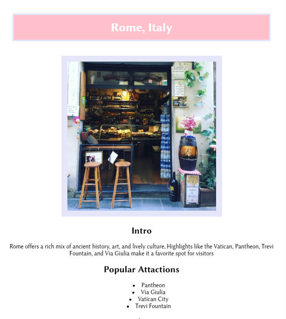

The purpose of this assignment was to practice writing simple HTML code to become familiar with the structure of HTML and work with some basic HTML tags to create a resume.

The purpose of this project was to create a single webpage with 5 steps, a favorite recipe with instructions and pictures, to become more familiar using semantic HTML, the Box Model and CSS.

This assignment was to create a single web page about a favorite city and to use floating to break the normal flow of HTML.
The purpose of this web project was to implement HTML and CSS to convert regular text files into a multiple-page e-book website, and then to publish our work to the web via GitHub.